Teaching the Surena IV humanoid to walk in simulation, with a method that shrinks the learning problem by letting reinforcement learning shape trajectories while classical kinematics handles the joints.
About this page. This is an English summary of my Master's thesis (University of Tehran, 2022); the full thesis is written in Persian. The summary was prepared in 2026, translated and condensed with the help of Claude (Anthropic), keeping every method, number, and limitation intact.
A walking humanoid is high-dimensional, underactuated, and only touches the ground intermittently, so balance has to be actively maintained at every instant. Classical control solves this with reduced-order models and explicit balance criteria like the Zero-Moment Point, but each controller takes heavy, model-specific engineering. Reinforcement learning promises a model-light alternative, yet for a full-size humanoid the action space is large and balance is fragile, so naïve end-to-end learning struggles.
The main question is whether added structure can make RL more tractable for humanoid walking, instead of asking a network to learn joint-level coordination from scratch. The testbed is Surena IV, a full-size adult humanoid built at the Center of Advanced Systems and Technologies (CAST) at the University of Tehran. I simulated its URDF model in PyBullet and controlled twelve lower-body degrees of freedom (six per leg).
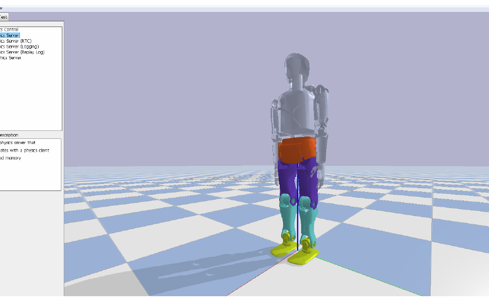
I built two RL environments. The first is a flexible baseline that commands the motors directly. The second is the thesis's main methodological idea: shrink the action space by letting the agent shape trajectories, with classical inverse kinematics doing the joint-level math.
Environment 1 · Baseline
A configurable testbed: swap the action type and the number of joints under a shared reward.
Environment 2 · Contribution
The agent shapes trajectories; analytic inverse kinematics produces the joint angles.
Instead of emitting ten-plus joint commands every step, the policy in Environment 2 outputs small increments [Δx, Δy, Δz] to the center-of-mass and swing-foot trajectories. The CoM path is built from an inverted-pendulum walking model (lateral sway set relative to the support foot, CoM height held near 0.7 m); the agent perturbs the CoM's x/y and the swing ankle's x/z, nudging the reference paths a classical planner would otherwise fix. A closed-form inverse-kinematics block for the Surena IV leg turns the desired pelvis and foot poses into joint angles, run separately for each leg from the pelvis/foot poses and the thigh, pelvis, and shank link lengths.
Two engineering details make it work: a fixed offset vector reconciles the classical method's reference points with what PyBullet actually reports (the ankle-link and pelvis centers of mass), so feedback stays consistent with the planner's assumptions; and the stance/swing hand-off is triggered from foot-contact forces. When force under the swing foot builds over several steps, the support foot switches, with a brief double-support phase in between. The Zero-Moment Point, computed from the same contact forces, is monitored against the support polygon for balance. The expressive machinery of classical walking stays in the loop; the network only has to learn a handful of trajectory parameters.
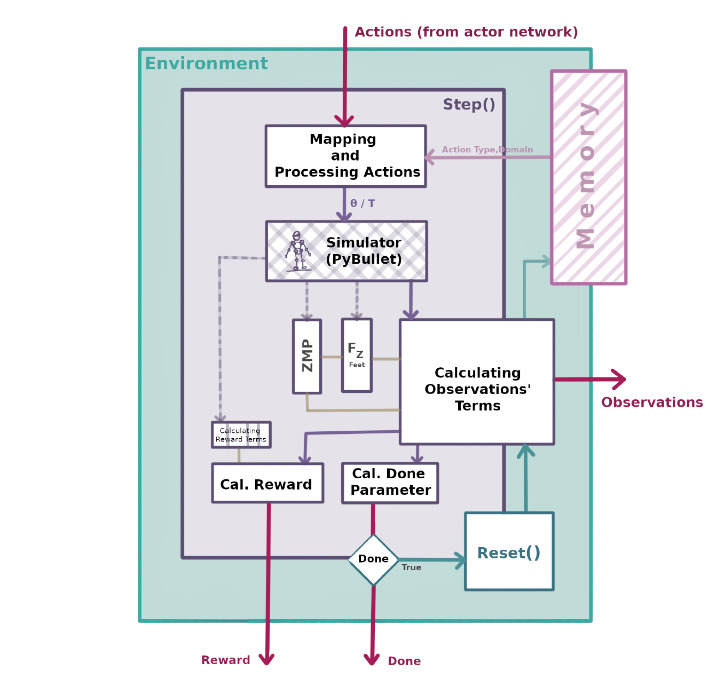
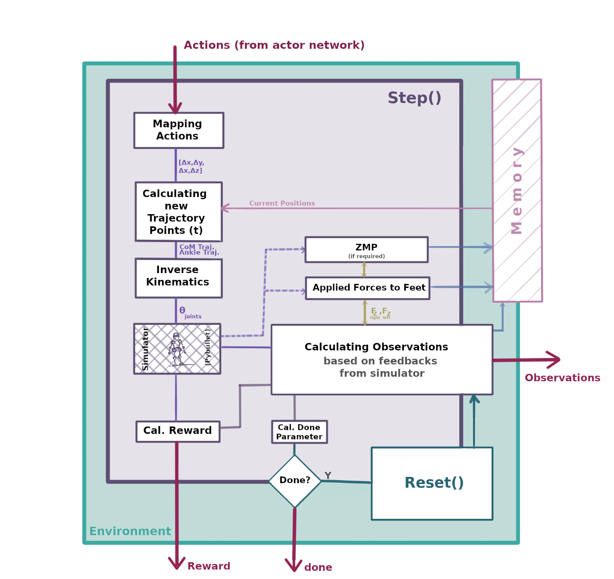
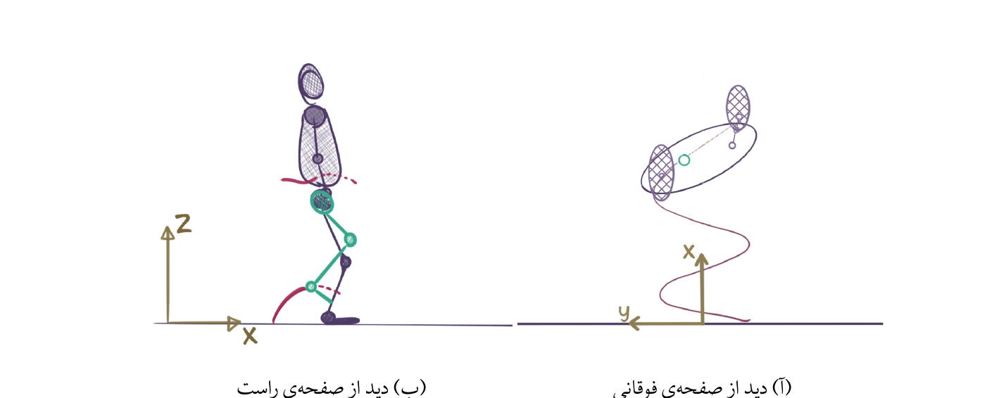
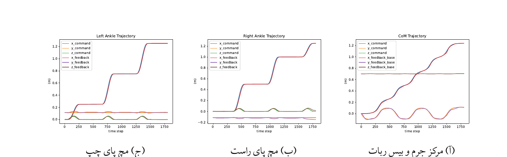
For the learning algorithm, I compared PPO, DDPG, TD3, and SAC, and chose PPO for its stability on high-dimensional continuous control. The reward is a weighted sum of interpretable, biomechanically-motivated terms: forward progress and velocity, survival time, and foot placement on the positive side; energy use, sideways drift, and upper-body tilt on the negative side. Any term can be zeroed out for ablation or wrapped in a shaping function, and there are dedicated sub-rewards for landing the swing foot flat and (optionally) for imitating a reference human gait.
Rather than ending an episode the moment the Zero-Moment Point leaves the support polygon, I treat that as a soft penalty in the reward, not a hard failure. The ZMP-in-polygon test is sufficient but not necessary for staying upright: a robot can briefly tip onto a foot edge and still recover, so a hard test would kill promising episodes early. Falls are detected from center-of-mass height instead.
In 2022, most work focused on end-to-end joint-level RL. This thesis instead kept classical structure in the controller and used RL to modify trajectories. Hybrid approaches that combine learning with model-based controllers and trajectory generators have since become more common in legged locomotion.
Below are additional figures from the thesis. The complete original (Persian) thesis is here, and the English summary PDF is here. The implementation, including custom Gym environments, trajectory generation, inverse kinematics, and training scripts, is on GitHub: github.com/RHnejad/gym-Surena.
Human walking alternates a stance phase (the foot supporting the body) with a swing phase (the foot in the air, advancing). The swing-foot trajectory the agent learns is exactly that swing motion.
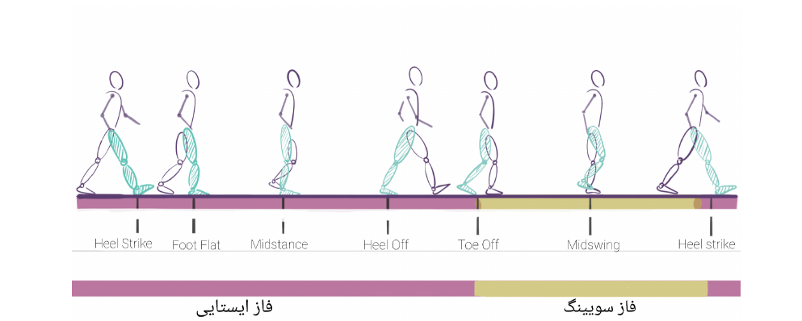
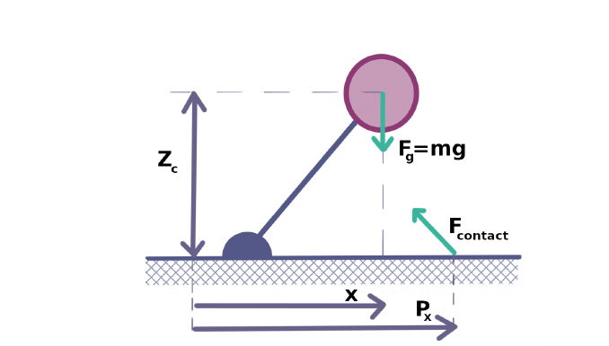
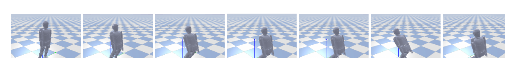
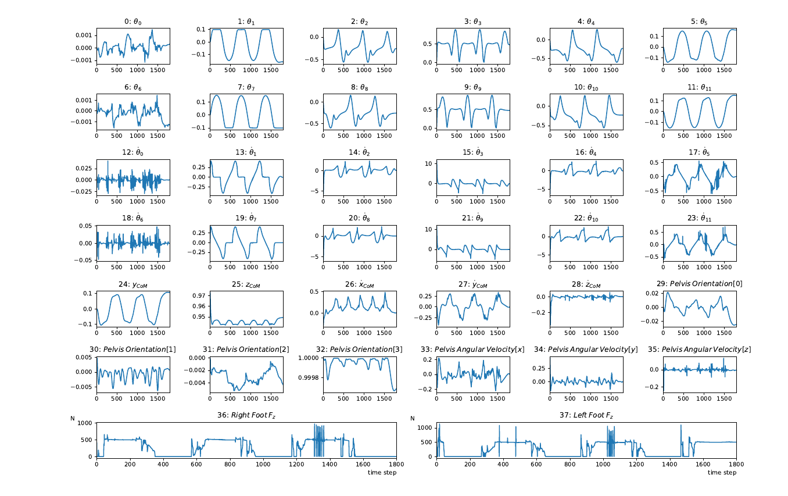
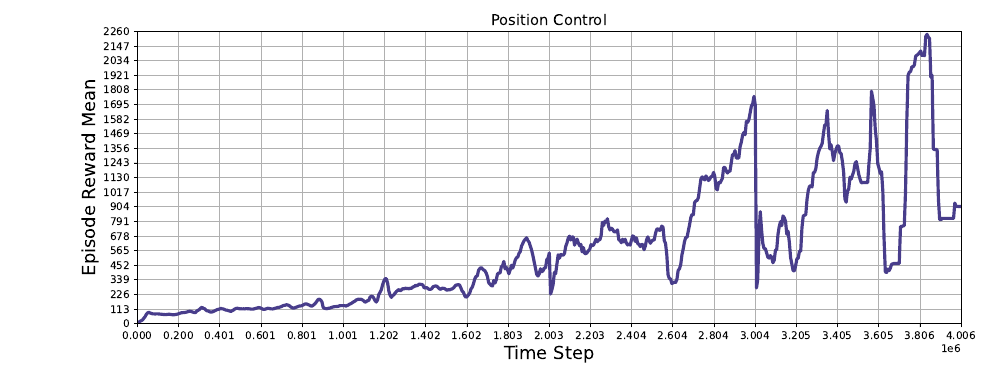
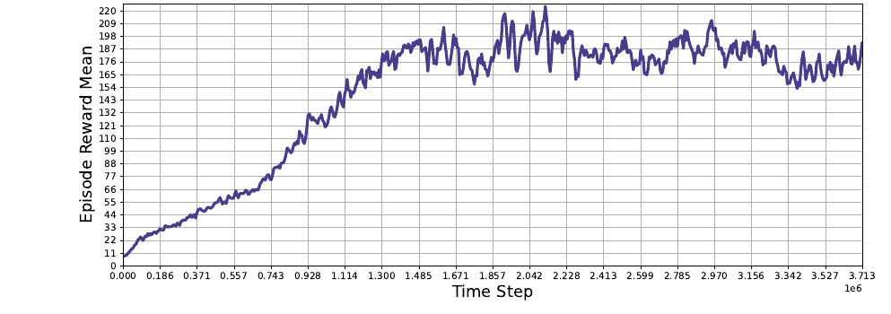